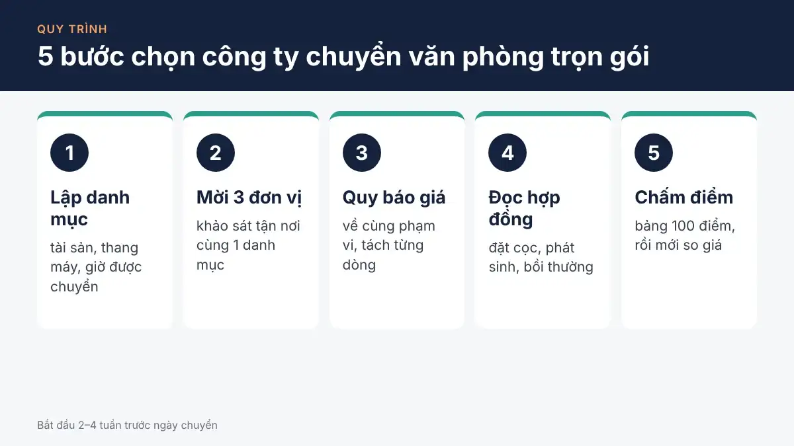

Tiêu chí đánh giá công ty chuyển văn phòng uy tín
6 tiêu chí đánh giá công ty chuyển văn phòng uy tín: pháp lý, khảo sát, báo giá, nhân lực, hợp đồng bồi thường, kinh nghiệm – kèm câu hỏi và bảng chấm điểm.
· 4 phút để đọc
Chọn công ty chuyển văn phòng trọn gói là so sánh các đơn vị theo ba điểm: năng lực thực hiện, độ rõ ràng của báo giá và hợp đồng, và cách họ xử lý khi tài sản hư hỏng. Giá chỉ là một dòng trong phép so sánh đó. Văn phòng có máy tính, hồ sơ và nội thất lắp ráp, nên một đơn vị làm ẩu có thể kéo theo ngày nghỉ việc, chi phí sửa chữa và tranh chấp về bồi thường.
6 tiêu chí đánh giá công ty chuyển văn phòng uy tín: pháp lý, khảo sát, báo giá, nhân lực, hợp đồng bồi thường, kinh nghiệm – kèm câu hỏi và bảng chấm điểm.
· 4 phút để đọc
Bài này gom quy trình chọn đơn vị thành 5 bước và một bảng chấm điểm 100 điểm. Mỗi bước có trang hướng dẫn chi tiết riêng để bạn đi sâu khi cần.

Quy trình chọn đơn vị nên bắt đầu từ 2–4 tuần trước ngày chuyển, đủ thời gian để mời ít nhất 3 đơn vị khảo sát và so sánh.
Một đơn vị chuyển văn phòng đáng tin cậy chứng minh được sáu điều trước khi bạn đặt cọc: tư cách pháp lý rõ ràng, khảo sát thực tế, báo giá tách dòng, nhân lực và phương tiện phù hợp, hợp đồng có điều khoản bồi thường, và kinh nghiệm với văn phòng cùng quy mô. Mỗi tiêu chí cần một bằng chứng cụ thể, ví dụ mã số thuế tra cứu được hay danh mục tài sản đính kèm hợp đồng.
Cách kiểm tra từng tiêu chí và câu hỏi nên đặt cho đơn vị được trình bày trong bài tiêu chí chọn công ty chuyển văn phòng.
Một báo giá chuyển văn phòng dùng được để so sánh phải ghi rõ loại xe và số chuyến, số nhân công, vật tư đóng gói, hạng mục tháo lắp, các phụ phí có thể phát sinh và giá đã gồm VAT hay chưa. Báo giá chỉ có một con số tổng thì không cho bạn biết khoản nào đã gồm, khoản nào sẽ tính thêm vào ngày chuyển.
Hai báo giá chỉ so được khi cùng phạm vi công việc. Cách quy đổi và mẫu bảng so sánh ba đơn vị có trong bài so sánh báo giá chuyển văn phòng.
Hợp đồng chuyển văn phòng nên có danh mục tài sản đính kèm, mức đặt cọc, điều kiện thay đổi giá, cách nghiệm thu và mức bồi thường khi mất mát hoặc hư hỏng. Cam kết như "không phát sinh" hay "bồi thường 100%" chỉ có giá trị khi được ghi trong hợp đồng, kèm cách xác định giá trị tài sản.
Bốn dấu hiệu cho thấy nên dừng lại trước khi đặt cọc:
Cách kiểm tra từng dấu hiệu có trong bài dấu hiệu dịch vụ chuyển văn phòng kém chất lượng.
Bảng chấm điểm dưới đây quy sáu tiêu chí về thang 100 điểm. Trọng số là gợi ý: văn phòng nhiều thiết bị IT có thể tăng điểm cho năng lực tháo lắp, văn phòng nhỏ có thể tăng điểm cho giá.
| Tiêu chí | Điểm tối đa | Bằng chứng cần thấy |
| Khảo sát thực tế và báo giá tách dòng | 25 | Biên bản hoặc ghi chú khảo sát; báo giá có từng hạng mục |
| Hợp đồng và điều khoản bồi thường | 25 | Hợp đồng mẫu có danh mục tài sản, mức bồi thường, điều kiện phát sinh |
| Pháp lý và hóa đơn | 15 | Mã số thuế, địa chỉ tra cứu được; xác nhận về hóa đơn VAT |
| Nhân lực, xe và vật tư | 15 | Số nhân công, người phụ trách, loại xe, danh sách vật tư |
| Kinh nghiệm với văn phòng tương tự | 10 | Ví dụ dự án cùng quy mô, người liên hệ tham chiếu nếu có |
| Lịch làm việc phù hợp | 10 | Nhận chuyển ngoài giờ hoặc cuối tuần nếu bạn cần, ghi phí rõ ràng |
Nên ưu tiên đơn vị đạt từ 75 điểm và không có tiêu chí nào bị 0 điểm, thay vì đơn vị rẻ nhất nhưng thiếu hợp đồng. Khi đã có bảng chấm điểm, bạn có thể dùng chính bảng này để đánh giá một chuyển văn phòng tphcm cụ thể trước khi đặt lịch khảo sát.
Nên mời ít nhất 3 đơn vị khảo sát với cùng một danh mục tài sản. Ba báo giá đủ để thấy mức giá phổ biến và phát hiện báo giá thiếu hạng mục.
Chỉ nên chọn khi báo giá thấp nhất có cùng phạm vi công việc với các báo giá khác và hợp đồng có đủ điều khoản bồi thường. Giá thấp vì bỏ bớt tháo lắp hoặc vật tư thường quay lại dưới dạng phụ phí vào ngày chuyển.
Nên chốt đơn vị trước ngày chuyển khoảng 1–2 tuần, sau khi đã khảo sát và so sánh. Khoảng thời gian này đủ để đăng ký thang hàng với ban quản lý tòa nhà và chuẩn bị danh mục tài sản đính kèm hợp đồng.